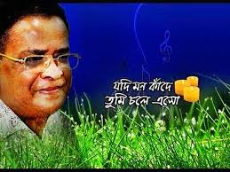
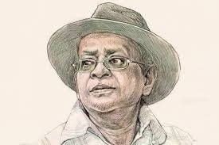
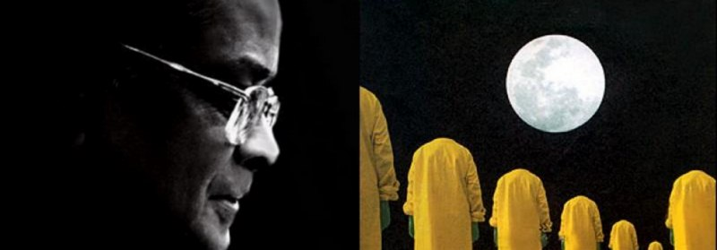

হুমায়ূন আহমেদ সম্পর্কে আরও জানতে পরিদর্শন করুন হুমায়ূন আহমেদ
  " হুমায়ূন আহমেদ বিংশ শতাব্দীর বাঙালি জনপ্রিয় কথাসাহিত্যিকদের মধ্যে অন্যতম। তাঁকে বাংলাদেশের স্বাধীনতা পরবর্তী শ্রেষ্ঠ লেখক গণ্য করা হয়।সাবলীল ঘটনার বর্ননা আর সহজ ভাষায় লেখার কারণে হুমায়ুন আহমেদের বই এর তুলনা নেই। হুমায়ূন আহমেদ একাধারে ঔপন্যাসিক, ছোটগল্পকার, নাট্যকার এবং গীতিকার। বলা হয় আধুনিক বাংলা কল্পবিজ্ঞান সাহিত্যের তিনি পথিকৃৎ। নাটক ও চলচ্চিত্র পরিচালক হিসাবেও হুমায়ূন আহমেদ সমাদৃত। তাঁর প্রকাশিত গ্রন্থের সংখ্যা দুই শতাধিক। বাংলা কথাসাহিত্যে তিনি সংলাপপ্রধান নতুন শৈলীর জনক। হুমায়ুন আহমেদের বইসমূহ পৃথিবীর নানা ভাষায় অনূদিত হয়েছে, বেশ কিছু গ্রন্থ স্কুল-কলেজ বিশ্ববিদ্যালয়ের পাঠ্যসূচীর অন্তর্ভুক্ত। সত্তর দশকের শেষভাগে থেকে শুরু করে মৃত্যু অবধি তিনি ছিলেন বাংলা গল্প-উপন্যাসের অপ্রতিদ্বন্দ্বী কারিগর। এই কালপর্বে তাঁর গল্প-উপন্যাসের জনপ্রিয়তা ছিল তুলনারহিত। হুমায়ূন আহমেদ এর সৃষ্ট হিমু ও মিসির আলি চরিত্রগুলি বাংলাদেশের যুবকশ্রেণীকে গভীরভাবে উদ্বেলিত করেছে।তাঁর নির্মিত চলচ্চিত্রসমূহ পেয়েছে অসামান্য দর্শকপ্রিয়তা। তবে তাঁর টেলিভিশন নাটকগুলি ছিল সর্বাধিক জনপ্রিয়। সংখ্যায় বেশী না হলেও তাঁর রচিত গানগুলোও সবিশেষ জনপ্রিয়তা লাভ করে। তাঁর অন্যতম উপন্যাস হলো নন্দিত নরকে, মধ্যাহ্ন, জোছনা ও জননীর গল্প, মাতাল হাওয়া ইত্যাদি। তাঁর নির্মিত কয়েকটি চলচ্চিত্র হলো দুই দুয়ারী, শ্রাবণ মেঘের দিন, ঘেঁটুপুত্র কমলা ইত্যাদি। নবীজি (২০১২) হুমায়ুন আহমেদের অপ্রকাশিত ও অসমাপ্ত বই"
পরিসমাপ্তি
পূর্ববর্তী পৃষ্ঠাগুলিতে যেতে নীচের বোতামগুলি টিপুন